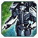
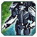

GAF Balance
Дата Обновления: 31/01/2025
Все меняется!
Всем Привет! Это наш ГАФ баланс. Все внесенные изменения могут быть изменены повторно.
Дисклеймер: Внесенные здесь изменения могут быть нарушены или иметь непредвиденные побочные эффекты, если вы с чем-то столкнетесь, пожалуйста, сообщите об этом в отдел баланса на сайте. Игровые Баги репортить сюда Канал на сервере GAF Discord
Все изменения, которые в настоящее время внесены в GAF, позволяют нам оценить новый баланс в реальных играх.
--Isakentyi,SupremeKiska и Gary_Goodspeed Баланс Команда
О балансе
Прелюдия
 Баланс патч 1.3 "Fixable" :
Баланс патч 1.3 "Fixable" :
В этом патче мы исправили юниты, которые стали имбой, уровняли время смерти всем факторкам. Ввели пару новых фишек, которые должны сделать игру комфортнее. Все изменения ниже по списку!
Новые фишки
 Метки
Метки
Мы добавили в метки отображение ника игрока который "пингует"
 Асист
Асист
Добавили “Имба ассист”. Теперь инженеры не будут кружить вокруг факторок или объектов и терять время на ассист постройки. Если вы дадите команду внутри дальности постройки инженера, он будет строить с того места, откуда вы дали приказ, а не подходить вплотную. Эта фича включена автоматически, и её можно отключить в настройках игры.
Constructions
Здания и постройки
 Т3 Ленд заводы
Т3 Ленд заводы
Сделали дороже по времени выход в Т3 ленд за все фракцции. Посмотрим как поменяется мета.
- Изменения
- Время выхода в Т3 Ленд:
5 мин 6 мин
 Квантовые Врата
Квантовые Врата
Вратам дали БП (билд павер). Мы думаем, что изменив эти параметры "студенты оживут".
 Псарня
Псарня
Пспарню удешевили по массе. Слишком дорого отдавать 1050 массы за 50 БП
- Изменения
- Стоимость псарни:
525 400
- Апгрейд псарни:
525 400
 Улей (Хайвы)
Улей (Хайвы)
Хайвы удешевили по массе и дали 5 БП на Т3. Слишком дорого отдавать 1050 массы за 50 БП
- Изменения
- Стоимость Хайва:
350 300
- Стоимость Т2 Хайва:
350 300
- Стоимость Т3 Хайва:
350 300
- БП Хайва:
50 55
 Апгрейд Т3 щита
Апгрейд Т3 щита
Последний апгрейд Кибранского щита был неоправданно дорогим: стоит дороже серафимского, а защиты такой же не предоставляет.
- Изменения
- Перезарядка после пробития:
22 18
- Реген щита:
140 170
- Старт регена после получени урона:
3 1.5

 Серафимские заводы
Серафимские заводы
- Изменения
Здания серафим уничтожались намного дольше, чем у остальных фракций. Это связано с анимацией. Мы исправили это, и теперь все постройки уничтожаются одинаково. Это существенно повлияет на геймплей за серафим.
Land
Navy
Т2 Навал
 Исход
Исход
Стал слишком сильным. Нерфим.
Air


 Мангуст
Мангуст 

 SACU (студенты)
SACU (студенты) Инженеры
Инженеры 


 Т3 АСФ
Т3 АСФ